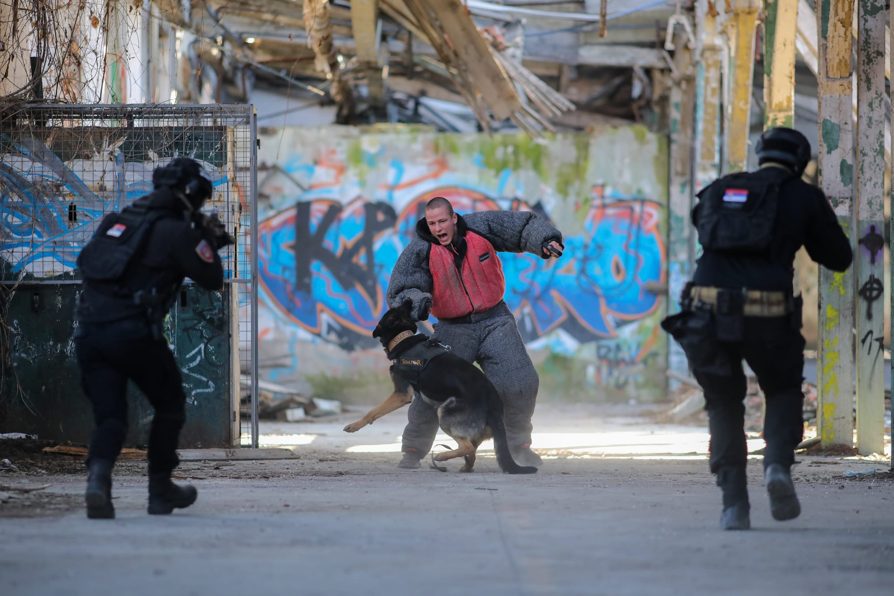
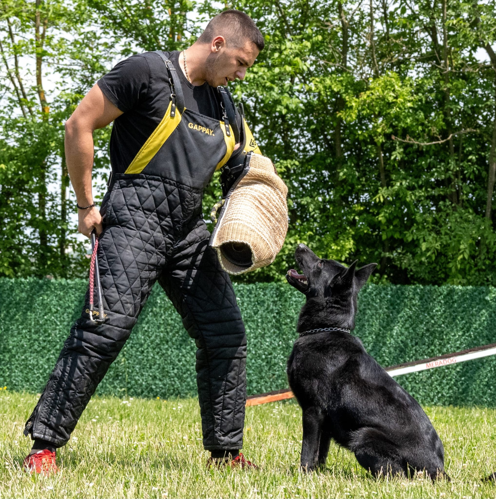
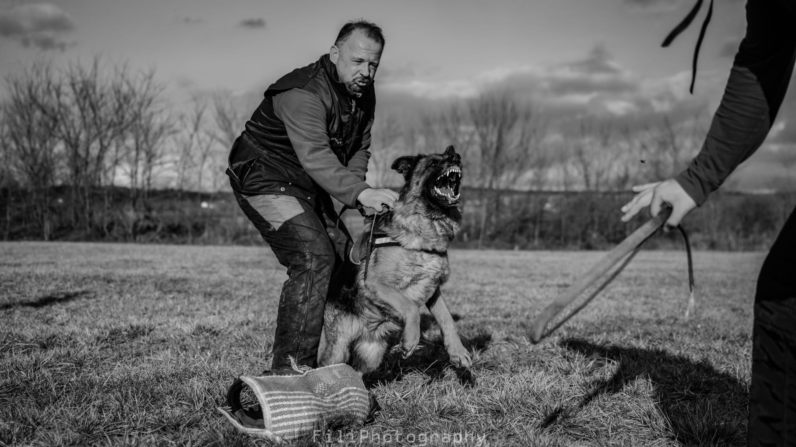
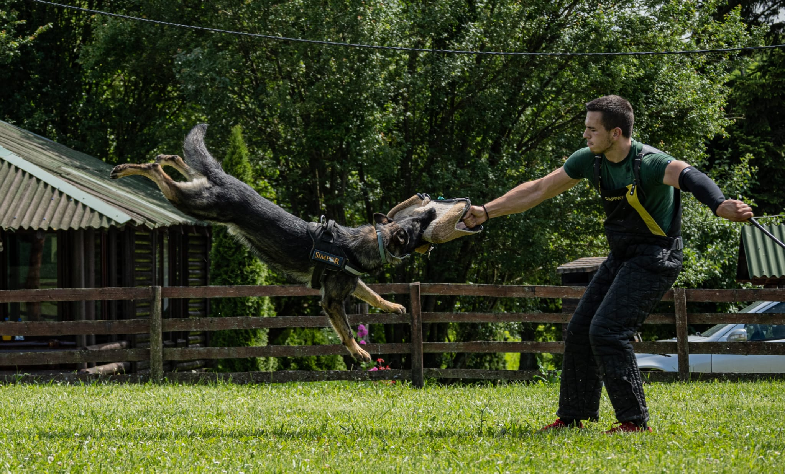
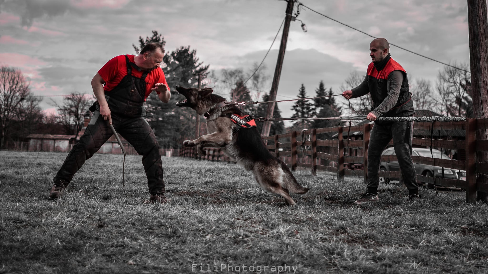
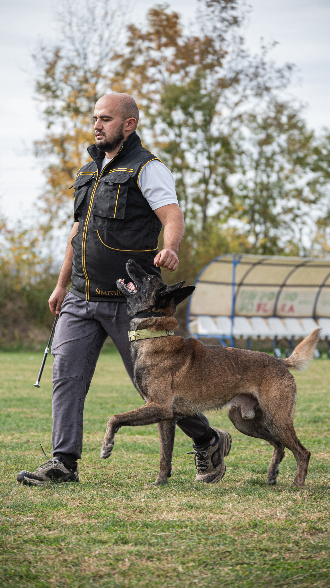
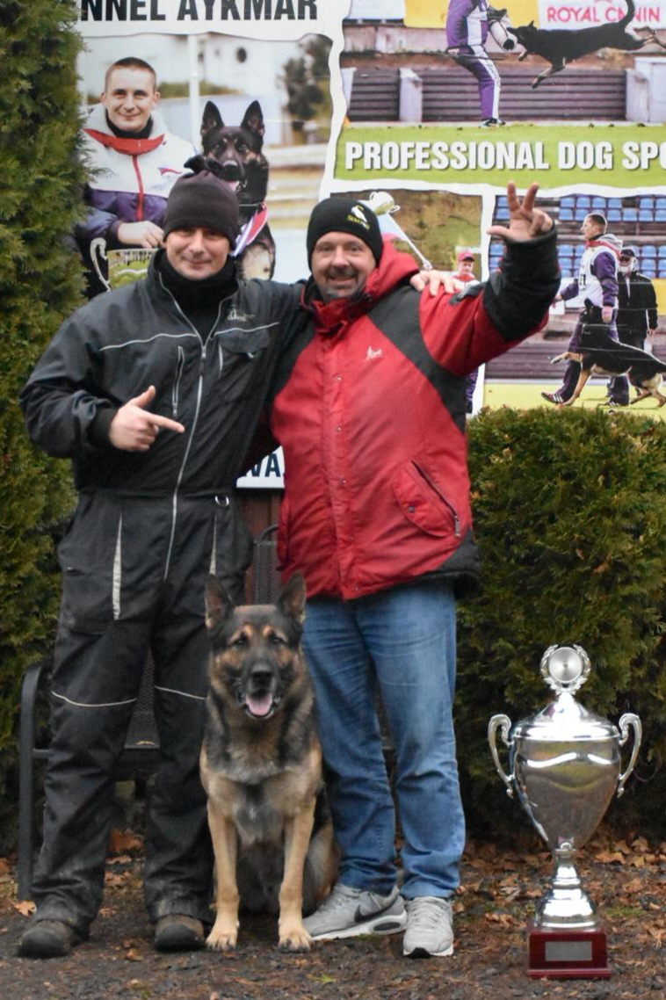
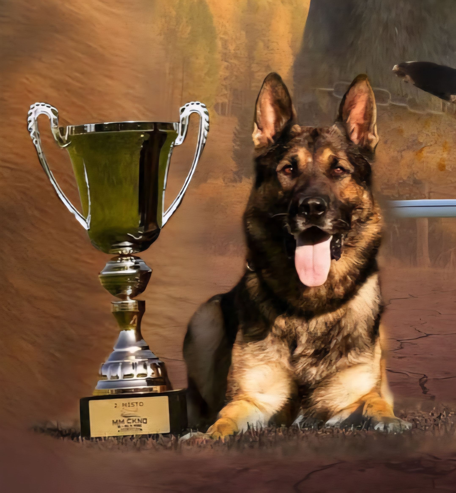
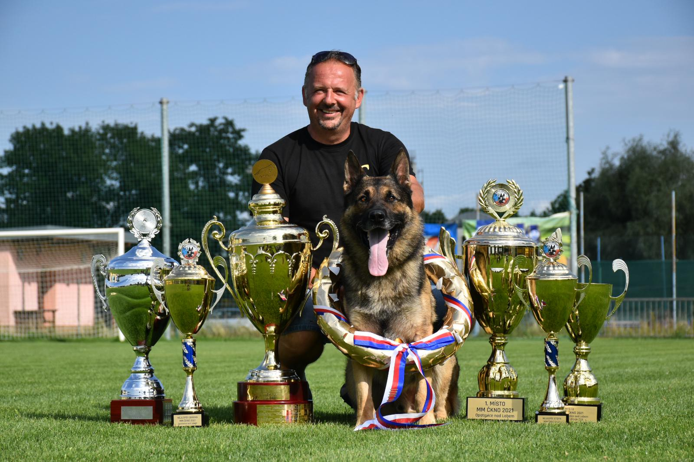

TRAINING SERVICES
Kennel & Dog Training Center · FCI 3428

Six complete training categories — from first obedience to World Championship level.

Our Approach
At Simpor Dog Center, every training program is built on decades of real-world experience in sport, protection, and K9 work. We do not follow trends — we set standards.
Each dog is assessed individually before beginning training. Programs are structured around the dog's natural drives, temperament, and the specific goals of the owner or handler. Whether you aim for World Championship competition or simply a reliable, well-behaved companion — the methodology is always the same: correct, consistent, and effective.
All training is conducted by certified professionals under the direct supervision of founder Dejan Simović, ensuring the highest possible standard in every session.
Training Category
From basic foundations for family dogs to elite IGP competition preparation — our obedience programs cover every stage of development with precision and care.
The focus of this training is on basic commands, proper leash walking, socialization, and reducing unwanted behavior. This level creates the foundation for further work and allows owners to communicate with their dog more easily and confidently in everyday life.
The basic obedience program is intended for dogs that already have basic control and are ready for more structured work. Training focuses on command precision, stability in different environments, and strengthening the dog's concentration. The goal is for the dog to respond reliably to commands in real-life situations.
This program is designed for dogs preparing for BH and IGP examinations in accordance with current international regulations. Training includes sport-level obedience work, precision in performing exercises, stability under pressure, and reliable work in different situations. Special emphasis is placed on correct technique and preparation for examination and competition.
The advanced obedience level is intended for dogs that have already completed the basic and intermediate stages. The program focuses on further developing control, creative exercises, tricks, and advanced commands that improve the dog's concentration, flexibility, and working motivation. Ideal for owners wanting a higher level of communication and mental stimulation.
In Training




Training Category
From personal protection and sport-level bite-work to police K9 preparation and breeding licenses — professional programs for serious working dog goals.
This personal protection program is intended for dogs trained to protect their owner and family in real-life situations. The training is based on control, stability, and proper evaluation of situations, with special emphasis on reliable performance without uncontrolled aggression. The goal: a dog that remains calm in everyday surroundings, yet responds decisively when necessary.
This training program is designed for the protection of property, buildings, and facilities. Dogs are trained for controlled territorial guarding, proper reaction to unauthorized entry, and reliable work in different conditions — including night work and work on larger areas. Special attention is given to character stability and obedience.
This sport protection program includes training in accordance with the rules of IGP 1–3. The training develops working drives, bite-work technique, control, speed, and precision. This type of protection work is the foundation of working dog sport and serves as the basis for further sport or professional programs, with a clear focus on correct structure and proper working technique.
The Civil K9 program is designed for dogs trained for professional protection and official duties in real-life conditions. The training combines obedience, protection work, and stability in urban environments. The program is adapted to the requirements of private security, as well as preparation for work within professional K9 systems, with a high level of control and reliability.
This program includes the preparation of dogs for KKL and ZTP breeding licenses for different working breeds. Training focuses on evaluating temperament, stability, working drives, and protection abilities in accordance with current regulations. The goal is the selection and preparation of high-quality dogs that meet the highest standards of breeding and working dog programs.
Championship Standards




Training Category
From the show ring to the sport field — presenting your dog's anatomy and working ability at its absolute best.
This program is intended for dogs of all breeds, with special focus on the correct presentation of anatomy, movement, and character in accordance with current breed standards. Through professionally guided training, conditioning, and proper preparation, we work to present the dog's anatomical and working qualities in the best possible way. Special attention is given to correct movement, posture, confidence, and the connection between the dog and handler in the show ring.
This sport competition program is intended for working-line dogs preparing for IGP 1–3 competitions. Training is focused on achieving maximum precision in every exercise, along with a high level of control and stability under demanding conditions. Special emphasis is placed on working technique, discipline, and consistency, enabling dogs to achieve the highest scores and the best possible placements at national and international sport competitions.
Training Category
The BH confirms your dog's readiness for life and work. IGP builds the complete working dog — from tracking and obedience to protection.
The BH program is the basic obedience and socialization test for dogs intended to live and work in urban and everyday environments. This program confirms the dog's stable temperament, control, obedience, and proper behavior in the presence of people, other dogs, and traffic. The BH examination is a prerequisite for all further working and sport titles, as well as the foundation for advanced training in sport, protection, and K9 programs.
The IGP program represents the foundation of professional work with working dogs and the basis for further sport development. Training includes a high level of obedience, precision in command execution, and stability under demanding working conditions. Depending on the dog's ability, genetics, and the precision of both dog and handler, the IGP program can be directed toward sport competition with the goal of achieving top results, or it can serve as the basis for further professional and working dog training.
IGP Disciplines
The tracking discipline evaluates the dog's ability to use its nose to find and follow a human track. During the exercise, the dog must demonstrate concentration, precision, and calmness, while correctly indicating found articles. Tracking develops the dog's mental stability, focus, and independence, and forms the basis for many working and service purposes.
The obedience discipline includes the precise execution of exercises under the handler's control, including heeling, changes of pace, recalls, stays, and other tasks defined by the regulations. The emphasis is placed on accuracy, concentration, and harmony between dog and handler, with the goal of achieving maximum points and reliable performance under sport conditions.
The protection discipline evaluates the dog's courage, determination, and control in attack and defense situations. The dog must demonstrate strong working drives, correct technique, and a high level of control and obedience. This discipline requires a stable temperament and precise cooperation with the handler, while strictly respecting safety rules and sport standards.
Training Category
Breeding licenses that guarantee the quality and future of the breed — prepared to the highest international standard.
KKL (Körung) is the official breeding license for German Shepherd Dogs, conducted in accordance with the rules of the Verein für Deutsche Schäferhunde (SV). The purpose of this test is to evaluate the dog's genetic potential, temperament stability, anatomy, and working abilities. Preparation includes evaluation of temperament, reaction to stress, obedience, and protection work, as well as the correct presentation of the dog according to breed standards. Only dogs that meet the highest criteria receive a breeding license, ensuring the quality and continuity of the German Shepherd breed.
ZTP is a breeding suitability test intended for working breeds including Rottweilers, Dobermans, and other working dogs, in accordance with the regulations of their respective breed organizations. The test evaluates temperament, stability, working drives, obedience, and the dog's reaction in protection and stressful situations. Preparation for ZTP requires systematic training, proper socialization, and controlled development of the dog's working qualities. The goal is to select high-quality dogs that meet the requirements for responsible and professional breeding, while preserving the breed's working abilities and characteristic traits.
Training Category
From search and detection to police and military service — complete K9 programs built on 30 years of professional working dog experience.
Designed for training dogs in search and detection work in different environments. Focuses on scent work, concentration, and precision in locating the target, with reliable performance in both controlled and real-life conditions.
Adapted for dogs working in everyday and urban environments. Special emphasis is placed on stability, obedience, and the dog's proper reaction when exposed to people, traffic, and various external factors.
Focuses on controlled protection work with a clear emphasis on obedience, stability, and safe, reliable responses in real-life situations. Designed for both professional use and high-stakes personal protection requirements.
Training for police service dogs includes obedience, protection work, and specialized tasks in accordance with official requirements. The program is adapted for professional use and high working standards in law enforcement environments.
Intended for dogs being prepared for work in demanding and high-risk environments. Training includes a high level of discipline, stress resistance, and reliable performance in complex situations where there is no margin for error.
Training for private security dogs focuses on the protection of people, property, and facilities. The program combines obedience, controlled protection work, and stable behavior in a professional environment suited to commercial security requirements.
"Every exercise has a reason. Every correction has a purpose. Precision is not a style — it is the standard."
Contact us to discuss your goals, your dog's level, and the right program for you.
Enquire About Training